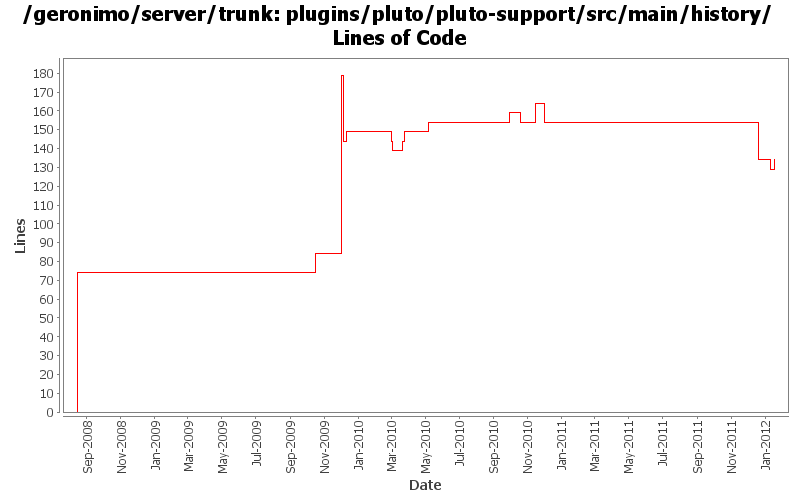

[root]/plugins/pluto/pluto-support/src/main/history

| Author | Changes | Lines of Code | Lines per Change |
|---|---|---|---|
| Totals | 24 (100.0%) | 281 (100.0%) | 11.7 |
| djencks | 10 (41.7%) | 229 (81.5%) | 22.9 |
| rickmcguire | 8 (33.3%) | 25 (8.9%) | 3.1 |
| rwonly | 2 (8.3%) | 20 (7.1%) | 10.0 |
| gawor | 2 (8.3%) | 5 (1.8%) | 2.5 |
| xuhaihong | 1 (4.2%) | 1 (0.4%) | 1.0 |
| dwoods | 1 (4.2%) | 1 (0.4%) | 1.0 |
fix up build for karaf changes and modules that aren't built currently
5 lines of code changed in 1 file:
use same asm as karaf
1 lines of code changed in 1 file:
GERONIMO-6240 Make several base geronimo functions (kernel, deployer, etc) DS services and make the car-maven-plugin take advantage of that. Server assembly doesn't work yet, builds framework.
1 lines of code changed in 1 file:
revert the changes in rev 1035140 (GERONIMO-5655), since tomcat taglibs seems will not release in short time.
5 lines of code changed in 1 file:
GERONIMO-5655 switch to tomcat standard taglibs
15 lines of code changed in 1 file:
Some initial work on LICENSE/NOTICE files. Suppress inclusion of redundent commons-beanutils
0 lines of code changed in 1 file:
upgrade to new myfaces release, remove second version of commons-beanutils in repository
5 lines of code changed in 1 file:
The java ee concurrent JSR appears dead, and this code has some serious problems
within an OSGi environment. Removing this from the base Geronimo server because
of these issues. If the concurrent support ever becomes real, hopefully the split
package problems will be fixed in the final spec.
5 lines of code changed in 1 file:
Switch to latest stax spec level
1 lines of code changed in 1 file:
Fix stax/jaxb problems when starting the framework assembly.
5 lines of code changed in 1 file:
GERONIMO-5201 Repace service versions of spec bundles with Geronimo latest versions.
5 lines of code changed in 1 file:
My build shows xbean-finder as a new dependency... maybe this will fix the auto-build
5 lines of code changed in 1 file:
add osgi api to plugins pom
0 lines of code changed in 1 file:
obr and asm dependencies updates
5 lines of code changed in 1 file:
Update for renamed spec versions.
2 lines of code changed in 1 file:
Use JSP spec version
1 lines of code changed in 1 file:
GERONIMO-4965 Get pluto 2 running as osgi blueprint service. Base console sort of works. Fix a bug in jetty single-bundle-ear support for locating resources
5 lines of code changed in 1 file:
GERONIMO-4965. Get base console to compile. Simplify how locations in car are computed slightly, this needs to be ported to openejb and probably myfaces module bundlers
0 lines of code changed in 1 file:
get plugins to build cleanly after pluto changes
2 lines of code changed in 1 file:
fix problem in EarConfigBuilder when constructing sub-configurations for wars. Rename DeploymentContext.getBundle to getDependencyBundle to try to make it clearer that it is temporary and not always available. Start updating pluto/console stuff for pluto 2.
112 lines of code changed in 1 file:
add bundle packaging to many modules
10 lines of code changed in 1 file:
update other XML files with embedded versions from 2.2-SNAPSHOT to 3.0-SNAPSHOT
1 lines of code changed in 1 file:
GERONIMO-4692 sort dependencies.xml, except for connector-1_6
16 lines of code changed in 1 file:
GERONIMO-4248 Add dependency history files
74 lines of code changed in 1 file: